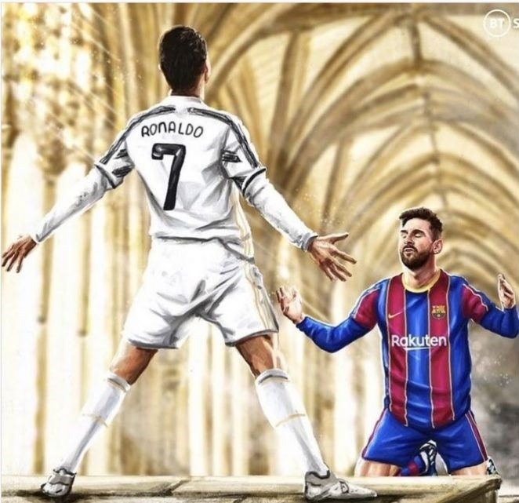

-

- 
-

-

-

-

-

5 CHAMPIONS LEAGUE, 4 MUNDIAL DE CLUBES, 3 PREMIER LEAGUE,2 SERIE A,2 LIGAS ESPAÑOLAS,3 SUPERCOPA DE EUROPA,1 FA CUP DE INGLATERRA,2 COPA DEL REY,1 COPA ITALIA,2 SUPERCOPA DE ESPAÑA,2 SUPERCOPA DE ITALIA,2 COPA DE LA LIGA DE INGLATERRA,2 SUPERCOPA DE INGLATERRA,1 PORTUGIESISCHER SUPERPOKALSIEGER
1 UEFA NATIONS LEAGUE, 1 EUROCOPA
3 JUGADOR MUNDIAL DE LA FIFA,5 BALLON D'OR,4 MEJOR JUGADOR EN EUROPA UEFA,14 MEJOR FUTBOLISTA DEL AÑO,1 PREMIO PUSKÁS,19 MÁXIMO GOLEADOR,8 MEJOR FUTBOLISTA DE LA TEMPORADA,2 JUGADOR DE LA TEMPORADA - USUARIOS DE TM
Cristiano Ronaldo dos Santos Aveiro (Funchal, Madeira; 5 de febrero de 1985), conocido como Cristiano Ronaldo, es un futbolista portugués. Juega como extremo izquierdo o delantero y su equipo actual es el Al-Nassr F.
Ronaldo comenzó su carrera en el Sporting Club de Portugal, equipo en el que obtuvo la Supercopa de Portugal antes de firmar con el Manchester United en 2003 a los 18 años, donde se consagró como futbolista de élite tras conquistar tres Premier League, dos EFL Cup, una FA Cup, dos Community Shield, una Liga de Campeones y una Copa Mundial de Clubes, fue galardonado con el Balón de Oro
Dolores Aveiro, madre del futbolista Katia Aveiro, hermana de Cristiano Eva, la nueva hija del madridista Mateo, hijo de Cristiano y mellizo de Eva Georgina Ridríguez, actual pareja del futbolista Sobrino de Cristiano, hijo de su hermano Hugo Hugo Aveiro, hermano del astro. Rubina, cuñada de Cristiano Ronaldo, mujer de Hugo Aveiro José Andrade, actual pareja de la madre de Cristiano, Dolores Aveiro Elma Aveiro, hermana de Cristiano Dinis, hermanastro de Cristiano, hijo de la madre de este. Cristiano Junior, primogénito del madridista Rodrigo, sobrino del futbolista, cuya madre es la hermana de este, Katia. Alicia Aveiro, sobrina de Cristiano e hija de Hugo Aveiro, su hermano Eleonor Caires, sobrina del futbolista e hija de Elma Aveiro
SPORTING DE LISBOA (2002/2003),MANCHESTER UNITED (2003/2004)-(2008/2009),REAL MADRID (2009/2010)-(2017/2018),JUVENTUS (2018/2019)-(2021/2022),MANCHESTER UNITED (2021/2022)-(2022/2023),AL-NASSR (2022/2023)-ACTUALIDAD

El jugador portugués hizo su debut contra el combinado de Kazajistán que se jugó en el Estadio Municipal de la ciudad de Chaves en Portugal. Cristiano Ronaldo entró en la segunda mitad, el compromiso terminó con marcador de 1 gol por 0 a favor de los lusos.
Con la camiseta roja y verde Ronaldo tiene un total de 200 encuentros y fue galardonado con el premio al Mejor Jugador de Portugal de todos los tiempos,Cristiano Ronaldo suma 115 goles con Portugal y es ya el máximo artillero de la historia de las selecciones nacionales.
Cristiano Ronaldo no se cansa de demostrar su solidaridad con los que más ayudas necesitan en el mundo y en los últimos años ha donado más de dos millones de euros a acciones solidarias, además de colaborar con otras muchas más.La donación más importante de Cristiano Ronaldo en los últimos años fue gracias a su Bota de Oro de 2012 ya que la vendió por cerca de dos millones de euros y el dinero lo empleó en fundaciones de ayuda a los niños de Gaza, para reconstruir el territorio y para luchar contra el SIDA. Además, el jugador del Real Madrid recaudó fondos en el año 2004 para ayudar a los afectados por el tsunami que destrozó Indonesia.

Style
Fit
Longevity

Durability
el portugués es una verdadera máquina de generar patrocinadores, y a continuación repasamos la lista de las principales marcas que lo acompañan, ubicándolo no sólo en la cima de los futbolistas sino también como uno de los deportistas que más ingresos publicitarios tiene